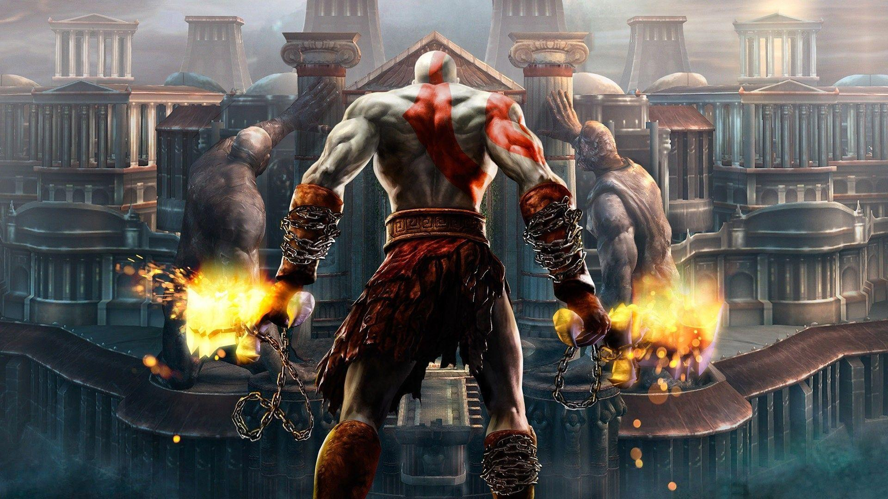
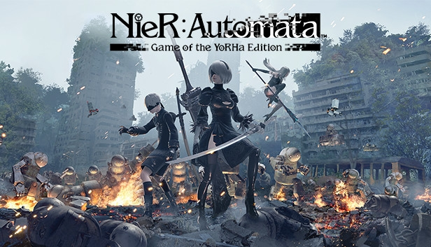

Resumo:
Hack and slash (que significa literalmente
"cortar e massacrar") é um gênero de jogos eletrônicos focado em ação rápida e combate corpo a corpo
com armas brancas. O estilo prioriza hordas de inimigos, combos fluidos e evolução constante de habilidades
e equipamentos.
God of War 2
.jpg)
Em God of War II, Kratos ascende ao posto de Deus da Guerra após derrotar Ares.
Traído por Zeus, que o mata e rouba seus poderes, Kratos é salvo pela titã Gaia. Ele parte em uma
jornada épica para alterar o passado e se vingar do Rei do Olimpo matando as Irmãs do Destino.
NieR: Automata

Em um futuro distante, invasores alienígenas expulsaram a humanidade da Terra usando máquinas mortais.
Para lutar pelo planeta, a resistência humana cria a YoRHa,
uma tropa de androides de elite. A história acompanha os agentes 2B e 9S em uma guerra implacável que
logo revelará verdades sombrias sobre ambos os lados.
Devil May Cry 3: Dante's Awakening

Devil May Cry 3: O Despertar de Dante é um jogo de ação frenética lançado originalmente pela Capcom em
2005, que serve como prequela cronológica da série principal.
A trama acompanha um jovem e arrogante Dante, recém-abrindo sua agência de caçador de demônios, antes de
compreender totalmente sua herança demoníaca.